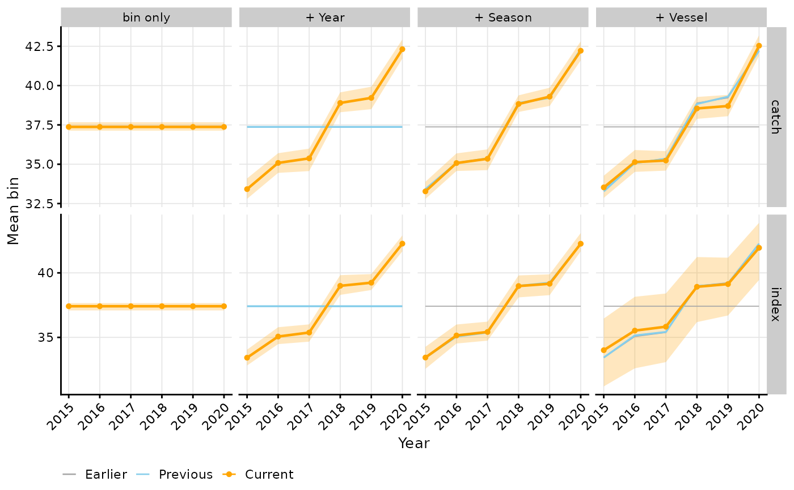

Add model terms one at a time and track a statistic of the composition
Source:R/influence.R
step_comps.RdRefits the model with terms added successively (a step plot, as used for
CPUE standardisation) and computes, for each step, a statistic of the
annual composition (by default the mean bin, e.g. mean length) with
uncertainty. The statistic is computed for the catch composition
(mode = "catch" in scale_comps()) and for the index
composition (mode = "index").
Usage
step_comps(
fit,
scale_df = NULL,
predvar = "catch",
grps,
by,
grid = NULL,
selectivity = NULL,
reference = NULL,
weight = NULL,
density = NULL,
order = NULL,
stat = "mean",
components = c("catch", "index")
)Arguments
- fit
A
ComPoMobject fromfit_model()withbackend = "TMB".- scale_df, predvar
Data frame and weight column for the catch component; see
scale_comps().- grps
Grouping variables for the scaling; see
scale_comps().- by
Variable in
grps(orgrid) over which the statistic is plotted, usually the year.- grid, selectivity, reference, weight, density
Settings of the index component; see
scale_comps().- order
Optional character vector with the terms in the order in which they are added. Terms are the
ffx_formandre_formvariables, the covariates, and"spatial"for spatial fits.- stat
"mean"(default), a probability between 0 and 1 for a quantile of the bin (e.g.0.9), or a function ofbinandp. Seecomp_quantile().- components
Components to compute:
"catch"and/or"index". A component is skipped when its data frame is not supplied.
Value
A list of class comp_step with steps (statistic by
step, component and level of by, with a 95% interval),
summary (degrees of freedom, log-likelihood and AIC per step),
by and stat_label.
Details
The first step is the model with bin-specific intercepts only. Terms are
added in the order of the model formula (fixed-effect variables, then
random-effect variables, then covariates, then the spatial fields), or in
the order given by order. Only the "TMB" backend is supported.
Examples
# \donttest{
dat <- data_prep(ex_comp, c("Year", "Season", "Vessel", "trip"), "length", "count")
fit <- fit_model("Year", "Season + Vessel", data = dat, backend = "TMB",
iter = 300, warmup = 100, thin = 2)
#> Model formula: tot_by_bin ~ 0 + bin + factor(Year):bin + (1 | bin:Season) + (1 | bin:Vessel)
st <- step_comps(fit, scale_df = ex_catch, predvar = "catch",
grps = c("Year", "Season", "Vessel"), by = "Year",
grid = data.frame(Year = factor(2015:2020)))
plot_step_comps(st)

# }